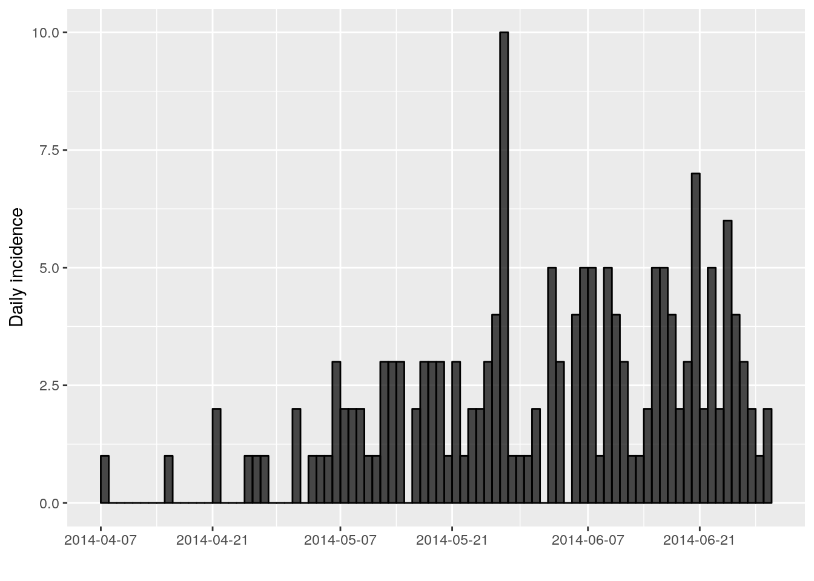
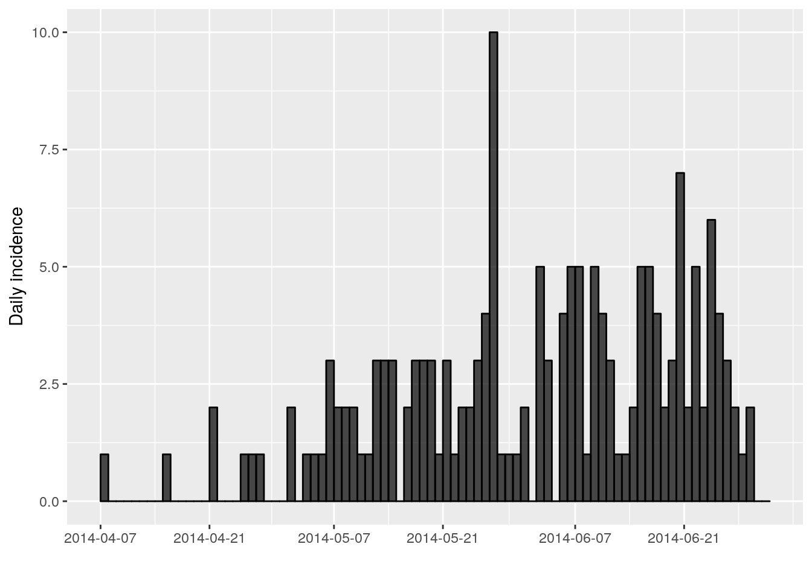
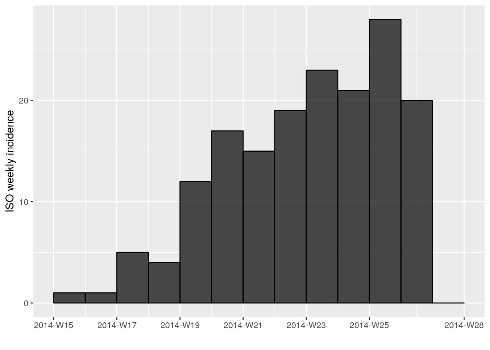

This practical (in three parts) simulates the early assessment and reconstruction of an Ebola Virus Disease (EVD) outbreak. It introduces various aspects of analysis of the early stage of an outbreak, including case fatality ratio (CFR), epicurves (part 1), growth rate estimation, contact tracing data, delays, and estimates of transmissibility (part 2), as well as transmission chain reconstruction using outbreaker2 (part 3).
By the end of this practical, you should be able to:
Load and clean outbreak data in R (part 1)
Estimate the case fatality ratio (CFR) (part 1)
Compute and plot incidence from linelist (part 1)
Estimate & interpret the growth rate & doubling time of the epidemic (part 2)
Estimate the serial interval from data on pairs infector / infected individuals (part 2)
Estimate & interpret the reproduction number of the epidemic (part 2)
Forecast short-term future incidence (part 2)
Reconstruct who infected whom using epidemiological and genetic data (part 3)
A new EVD outbreak has been notified in a fictional country in West Africa. The Ministry of Health is in charge of coordinating the outbreak response, and have contracted you as a consultant in epidemic analysis to inform the response in real time.
The following packages, available on CRAN or github, are needed for this analysis. Install necessary packages as follows:
# install.packages("remotes")
# install.packages("readxl")
# install.packages("outbreaks")
# install.packages("incidence")
# remotes::install_github("reconhub/epicontacts@ttree")
# install.packages("distcrete")
# install.packages("epitrix")
# remotes::install_github("annecori/EpiEstim")
# install.packages("projections")
# install.packages("ggplot2")
# install.packages("magrittr")
# install.packages("binom")
# install.packages("ape")
# remotes::install_github("finlaycampbell/outbreaker2") # [on CRAN soon]
# install.packages("here")Once the packages are installed, you may need to open a new R session. Then load the libraries as follows:
library(readxl)
library(outbreaks)
library(incidence)
library(epicontacts)
library(distcrete)
library(epitrix)
library(EpiEstim)
library(projections)
library(ggplot2)
library(magrittr)
library(binom)
library(ape)
library(outbreaker2)
library(here)You have been given the following linelist and contact data:
linelist_20140701.xlsx: a linelist containing case information up to the 1st July 2014; and
contact_20140701.xlsx: a list of contacts reported between cases up to the 1st July 2014. “infector” indicates a potential source of infection, and “case_id” the recipient of the contact.
To read into R, download these files and use the function read_xlsx() from the readxl package to import the data. Each import will create a data table stored as a tibble object.
linelist, andcontacts.For instance, you first command line could look like:
linelist <- read_excel(here("data/linelist_20140701.xlsx"), na = c("", "NA"))contacts <- read_excel(here("data/contacts_20140701.xlsx"), na = c("", "NA"))Take some time to look at the data and structure here.
dim(linelist)## [1] 169 11head(linelist)## # A tibble: 6 x 11
## case_id generation date_of_infecti… date_of_onset date_of_hospita…
## <chr> <dbl> <chr> <chr> <chr>
## 1 d1fafd 0 <NA> 2014-04-07 2014-04-17
## 2 53371b 1 2014-04-09 2014-04-15 2014-04-20
## 3 f5c3d8 1 2014-04-18 2014-04-21 2014-04-25
## 4 6c286a 2 <NA> 2014-04-27 2014-04-27
## 5 0f58c4 2 2014-04-22 2014-04-26 2014-04-29
## 6 49731d 0 2014-03-19 2014-04-25 2014-05-02
## # … with 6 more variables: date_of_outcome <chr>, outcome <chr>,
## # gender <chr>, hospital <chr>, lon <dbl>, lat <dbl>Note that for further analyses, you will need to make sure that all dates as
stored correctly as Date objects. You can do this by using the function
as.Date, for example:
linelist$date_of_onset <- as.Date(linelist$date_of_onset, format = "%Y-%m-%d")linelist$date_of_infection <- as.Date(linelist$date_of_infection, format = "%Y-%m-%d")
linelist$date_of_hospitalisation <- as.Date(linelist$date_of_hospitalisation, format = "%Y-%m-%d")
linelist$date_of_outcome <- as.Date(linelist$date_of_outcome, format = "%Y-%m-%d")The formatted data should then look like:
## # A tibble: 6 x 11
## case_id generation date_of_infecti… date_of_onset date_of_hospita…
## <chr> <dbl> <date> <date> <date>
## 1 d1fafd 0 NA 2014-04-07 2014-04-17
## 2 53371b 1 2014-04-09 2014-04-15 2014-04-20
## 3 f5c3d8 1 2014-04-18 2014-04-21 2014-04-25
## 4 6c286a 2 NA 2014-04-27 2014-04-27
## 5 0f58c4 2 2014-04-22 2014-04-26 2014-04-29
## 6 49731d 0 2014-03-19 2014-04-25 2014-05-02
## # … with 6 more variables: date_of_outcome <date>, outcome <chr>,
## # gender <chr>, hospital <chr>, lon <dbl>, lat <dbl>## # A tibble: 6 x 3
## infector case_id source
## <chr> <chr> <chr>
## 1 d1fafd 53371b other
## 2 f5c3d8 0f58c4 other
## 3 0f58c4 881bd4 other
## 4 f5c3d8 d58402 other
## 5 20b688 d8a13d funeral
## 6 2ae019 a3c8b8 otherLook more closely at the data contained in this linelist.
head(linelist)## # A tibble: 6 x 11
## case_id generation date_of_infecti… date_of_onset date_of_hospita…
## <chr> <dbl> <date> <date> <date>
## 1 d1fafd 0 NA 2014-04-07 2014-04-17
## 2 53371b 1 2014-04-09 2014-04-15 2014-04-20
## 3 f5c3d8 1 2014-04-18 2014-04-21 2014-04-25
## 4 6c286a 2 NA 2014-04-27 2014-04-27
## 5 0f58c4 2 2014-04-22 2014-04-26 2014-04-29
## 6 49731d 0 2014-03-19 2014-04-25 2014-05-02
## # … with 6 more variables: date_of_outcome <date>, outcome <chr>,
## # gender <chr>, hospital <chr>, lon <dbl>, lat <dbl>names(linelist)## [1] "case_id" "generation"
## [3] "date_of_infection" "date_of_onset"
## [5] "date_of_hospitalisation" "date_of_outcome"
## [7] "outcome" "gender"
## [9] "hospital" "lon"
## [11] "lat"You may notice that there are missing entries.
An important step in analysis is to identify any mistakes in data entry.
Although it can be difficult to assess errors in hospital names, we would expect the date of infection to always be before the date of symptom onset.
Clean this dataset to remove any entries with negative or 0 day incubation periods.
## identify mistakes in data entry (negative incubation period)
mistakes <-
mistakes
linelist[mistakes, ]## identify mistakes in data entry (negative incubation period)
mistakes <- which(linelist$date_of_onset <= linelist$date_of_infection)
mistakes## [1] 46 63 110linelist[mistakes, ] # show just the first few entries where there is negative or 0 incubation times.## # A tibble: 3 x 11
## case_id generation date_of_infecti… date_of_onset date_of_hospita…
## <chr> <dbl> <date> <date> <date>
## 1 3f1aaf 4 2014-05-18 2014-05-18 2014-05-25
## 2 ce9c02 5 2014-05-27 2014-05-27 2014-05-29
## 3 7.0000… 6 2014-06-10 2014-06-10 2014-06-16
## # … with 6 more variables: date_of_outcome <date>, outcome <chr>,
## # gender <chr>, hospital <chr>, lon <dbl>, lat <dbl>Save your “cleaned” linelist as a new object: linelist_clean
linelist_clean <- linelist[-mistakes, ]What other negative dates or mistakes might you want to check if you had the full dataset?
Here are the number of cases by outcome status. How would you calculate the CFR from this?
table(linelist_clean$outcome, useNA = "ifany")##
## Death Recover <NA>
## 60 43 63Think about what to do with cases whose outcome is NA?
n_dead <- sum(linelist_clean$outcome %in% "Death")
n_known_outcome <- sum(linelist_clean$outcome %in% c("Death", "Recover"))
n_all <- nrow(linelist_clean)
cfr <- n_dead / n_known_outcome
cfr_wrong <- n_dead / n_all
cfr_with_CI <- binom.confint(n_dead, n_known_outcome, method = "exact")
cfr_wrong_with_CI <- binom.confint(n_dead, n_all, method = "exact")\[I_t ∼ Poisson(\lambda_t)\]
The first question we want to know is simply: how bad is it?. The first step of the analysis is descriptive - we want to draw an epidemic curve or epicurve. This visualises the incidence over time by date of symptom onset.
Using the package incidence, compute the daily incidence from the linelist_clean based on the dates of symptom onset. Store the result in an object called i_daily; the result should look like:
i_daily <- incidence(linelist_clean$date_of_onset) # daily incidencei_daily## <incidence object>
## [166 cases from days 2014-04-07 to 2014-06-29]
##
## $counts: matrix with 84 rows and 1 columns
## $n: 166 cases in total
## $dates: 84 dates marking the left-side of bins
## $interval: 1 day
## $timespan: 84 days
## $cumulative: FALSEplot(i_daily, border = "black")
You might notice that the incidence dates i_daily$dates stops on the last date where we have data on date of symptom onset (29th June 2014). However close inspection of the linelist shows that the last date in the linelist (of any entry) is in fact a bit later (1st July 2014). You can use the argument last_date in the incidence function to change this.
#extend last date:
i_daily <- incidence(linelist_clean$date_of_onset,
last_date = as.Date(max(linelist_clean$date_of_hospitalisation, na.rm = TRUE)))
i_daily## <incidence object>
## [166 cases from days 2014-04-07 to 2014-07-01]
##
## $counts: matrix with 86 rows and 1 columns
## $n: 166 cases in total
## $dates: 86 dates marking the left-side of bins
## $interval: 1 day
## $timespan: 86 days
## $cumulative: FALSEplot(i_daily, border = "black")
Another issue is that it may be hard to interpret trends when looking at daily
incidence, so also compute and plot the weekly incidence i_weekly, as follows:
i_weekly <- incidence(linelist_clean$date_of_onset, interval = 7,
last_date = as.Date(max(linelist_clean$date_of_hospitalisation, na.rm = TRUE)))
i_weekly## <incidence object>
## [166 cases from days 2014-04-07 to 2014-06-30]
## [166 cases from ISO weeks 2014-W15 to 2014-W27]
##
## $counts: matrix with 13 rows and 1 columns
## $n: 166 cases in total
## $dates: 13 dates marking the left-side of bins
## $interval: 7 days
## $timespan: 85 days
## $cumulative: FALSEplot(i_weekly, border = "black")
This is the end of part 1 of the practical. Before going on to part 2, you’ll need to save the following objects:
dir.create(here("data/clean")) # create clean data directory if it doesn't exist
saveRDS(i_daily, here("data/clean/i_daily.rds"))
saveRDS(i_weekly, here("data/clean/i_weekly.rds"))
saveRDS(linelist, here("data/clean/linelist.rds"))
saveRDS(linelist_clean, here("data/clean/linelist_clean.rds"))
saveRDS(contacts, here("data/clean/contacts.rds"))